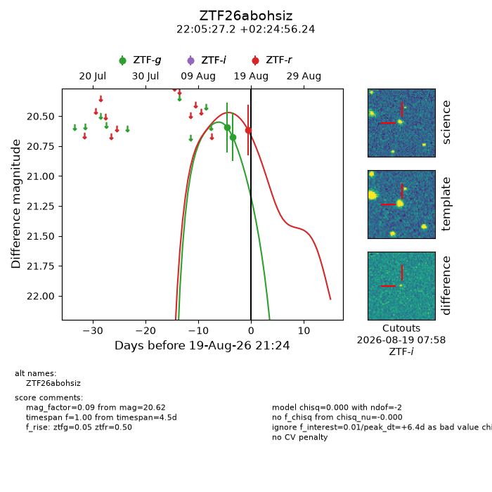
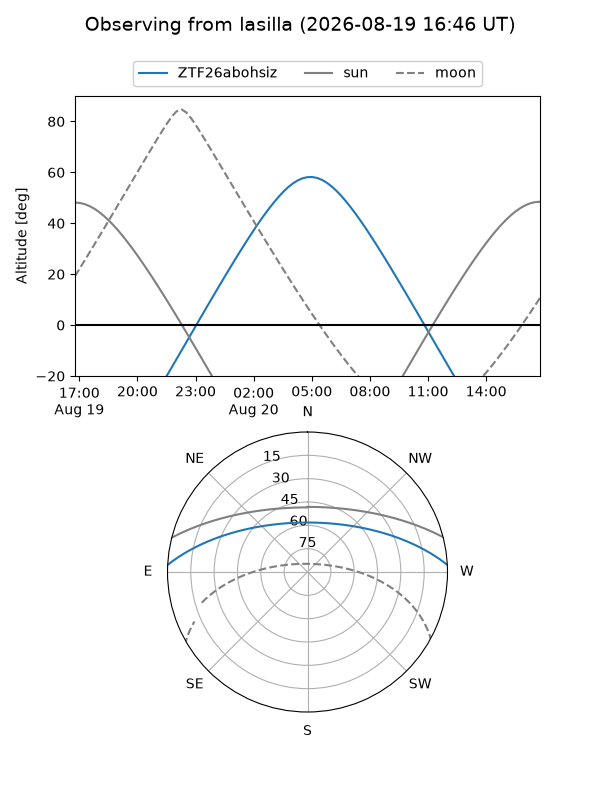
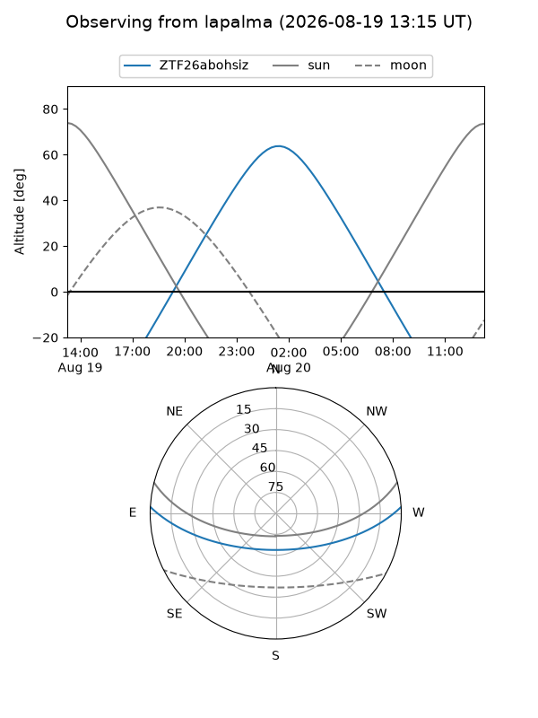
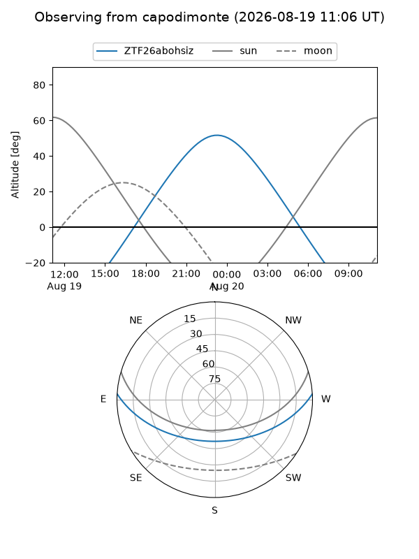

ZTF26abohsiz
Target ZTF26abohsiz at 2026-08-20 09:24
Aliases and brokers:
FINK-ZTF: ztf.fink-portal.org/ZTF26abohsiz
Lasair-ZTF: lasair-ztf.lsst.ac.uk/objects/ZTF26abohsiz
ALeRCE-ZTF: alerce.online/object/ZTF26abohsiz
Direct TNS query: direct search
alt names
ZTF26abohsiz (ztf,fink_ztf)
Coordinates:
equatorial (ra, dec) = 331.3634,+2.41562
equatorial (HMS+DMS) = 22:05:27.22,+02:24:56.24
galactic (l, b) = (62.7072,-40.30010)
Flags:
peak dt: +6.9
Photometry:
last ztfg=20.67, ztfr=20.62
2 ztfg, 1 ztfr detections
Lightcurve

Visibility



Additional plots